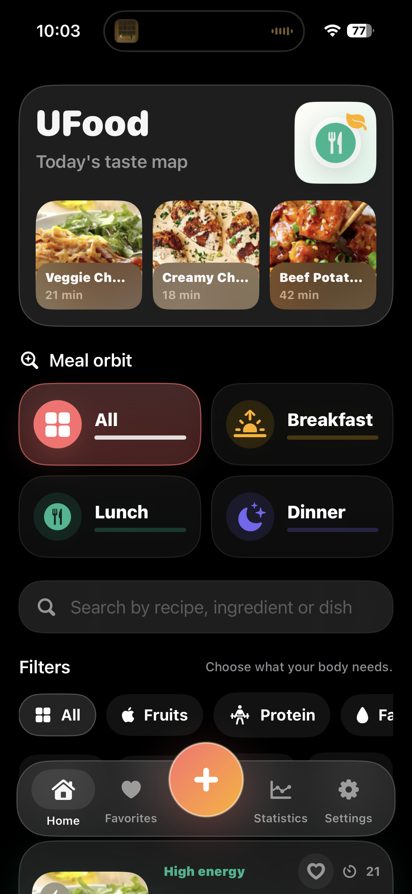

Understand your cooking habits.
UFood does more than store recipes. It helps you discover your most viewed meals, easiest recipes, meal split, calorie range, and protein-heavy favorites.
UFood helps you create a beautiful private recipe collection with photos, favorites, meal filters, cooking insights, and approximate nutrition estimates.
Download on the App Store
From your main taste map to recipe creation, favorites, details, and statistics — UFood turns your personal meals into a polished private food library.

View all saved meals in one place with beautiful cards, photos, meal filters, nutrition-style categories, prep time, calories, and open counts.

Add recipe name, description, meal type, prep time, servings, ingredients, steps, and a main photo.

Choose or capture a photo, then reposition and zoom it so every recipe looks clean inside the app.

Open a polished recipe page with hero photo, ingredients, steps, servings, prep time, calories, and protein.

Update recipes later while preserving favorites, open counts, creation dates, and existing photos.

Favorite the meals you love and quickly return to the recipes you cook most often.
UFood does more than store recipes. It helps you discover your most viewed meals, easiest recipes, meal split, calorie range, and protein-heavy favorites.
Statistics are designed to be useful, not just decorative. Tap into rankings, categories, and meal patterns to rediscover what you cook and love.

See approximate calories, protein, top categories, and useful recipe rankings based on your saved meals.

Find your easiest recipe, protein king, highest-calorie meal, and the meals you return to most often.
The Home screen highlights your latest recipes, meal orbit filters, and smart category chips in one smooth Apple-style interface.
UFood is local-first, private, Apple-native, and designed to feel smooth on iPhone and iPad.